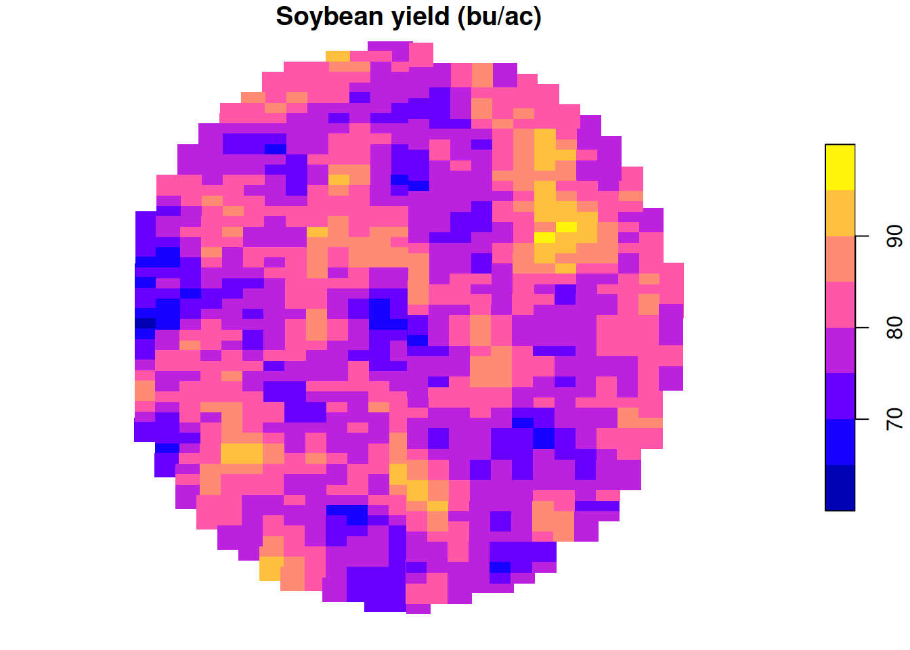
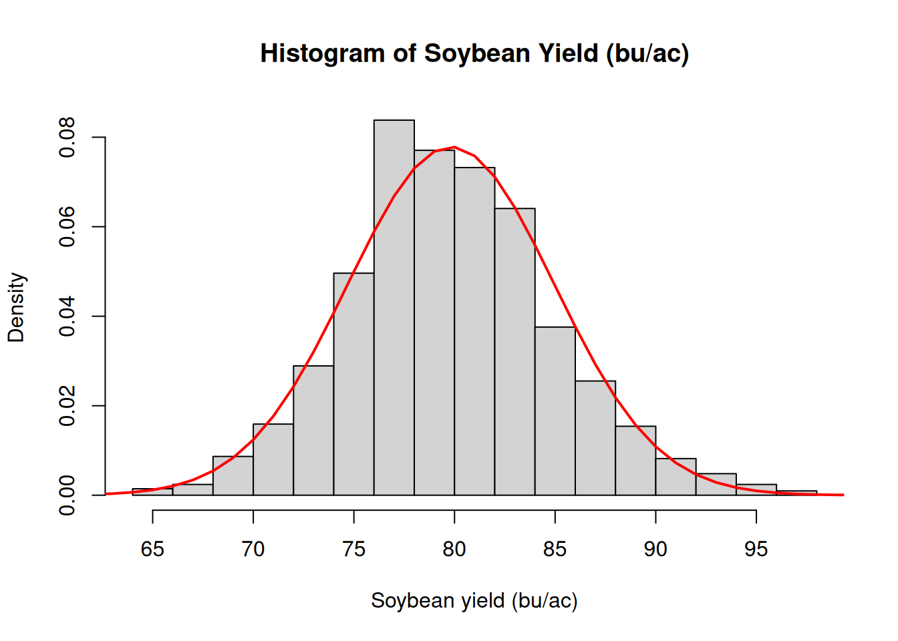
Module 9
Caio dos Santos
March 29, 2026
Up to this point in the course, I’ve been showing you nice, well-behaved datasets.
In module 2, we looked at an example of soybean yield data. We connected yield data first to the histogram and then we proceeded to overlaying the normal distribution density plot on top of it. This is a case in which the a model that assumes normality of the residuals might be justified.


Later, in modules 6 through 8, we looked at more complex experiments but they all had nice constant variability among treatments. One example is the fungicide treatment experiment below. This example should look familiar to you because we’ve spent a lot of time on it.
The graph on the left shows us that the variability within each treatment is somewhat similar, as indicated by the width of the error bars.
The graph on the right shows us a different, and perhaps more standard, way of assessing this. We can look at the residuals versus the predicted values. Note how the spread of the data does not increase or decrease as a function of the fitted values (in this case, yield). This is a good indication that our assumption of constant variance is not violated here.
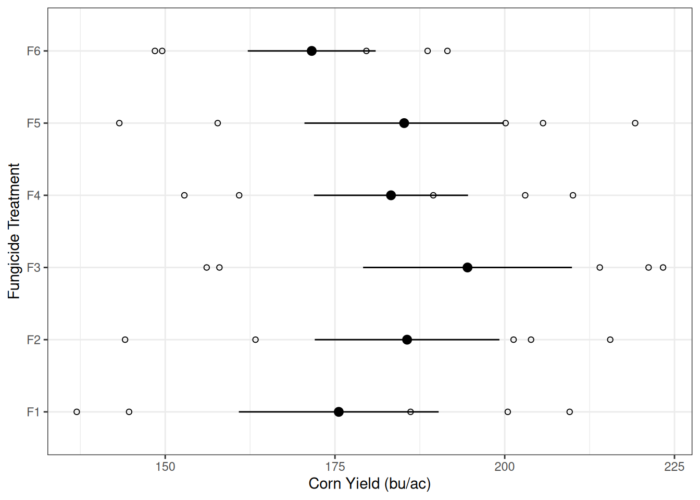
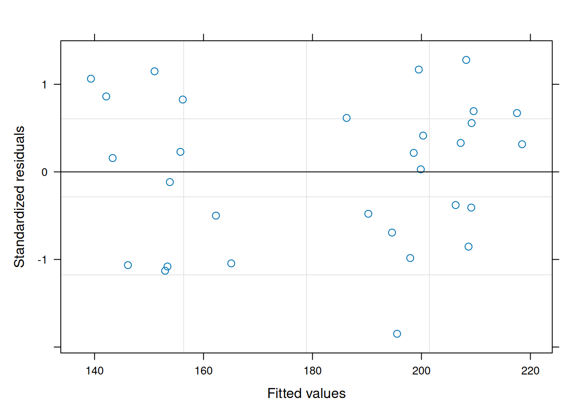
And because of that, the models we’ve built worked really well.
But let me ask you something:
What happens when the data don’t really behave as nicely?
Because in real agronomic experiments data are often messy.
In contrast to very well behave soybean example I showed you before. You will most likely encounter yield monitor data that looks more like the data below. Note that I have overlaid the normal distribution density cuve to show how it does not fit the data.
We can notice a couple of things:
While the normal distribution is unbounded (ranging from \(-\infty\) to \(\infty\)), yield data is obviously bounded to strictly positive values.
The yield data distribution is not symmetrical at all. The graph on the right shows that the data is right-skewed.
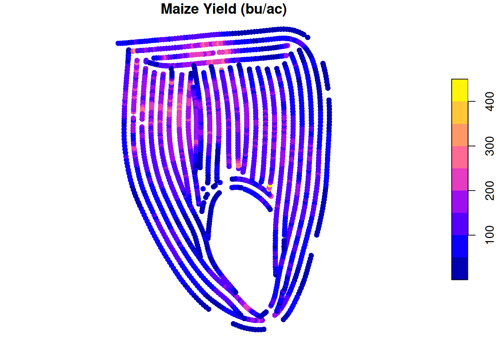
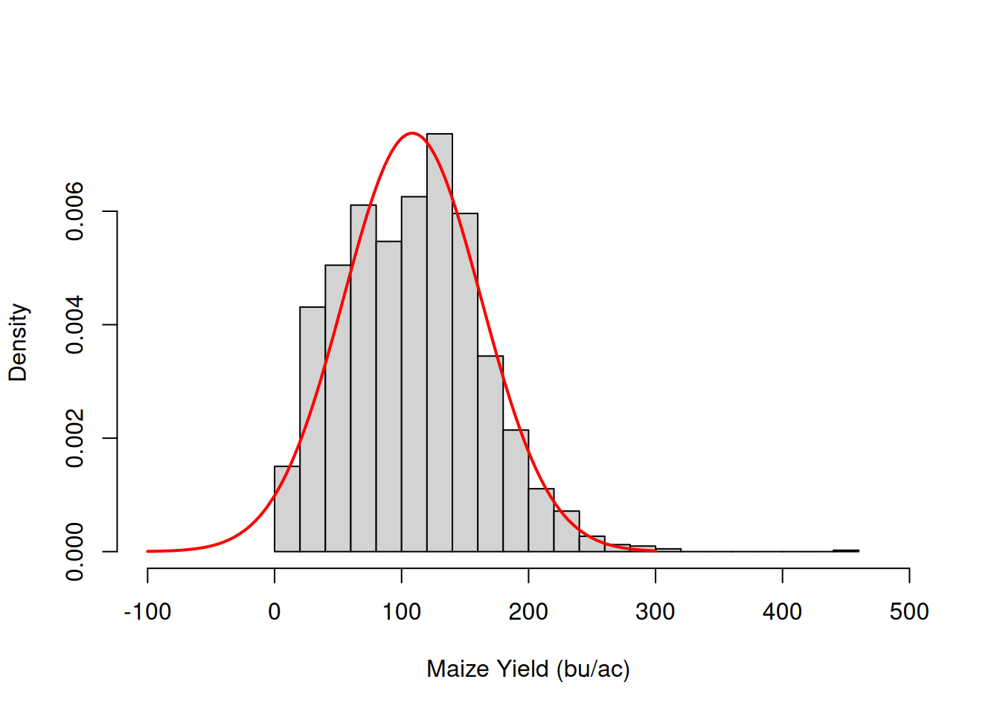
Whether we are counting insects, weeds, or disease lesions, count data is extremely common in agricultural experiments. Below is an example of insect counts.
We can immediately notice a few problems:
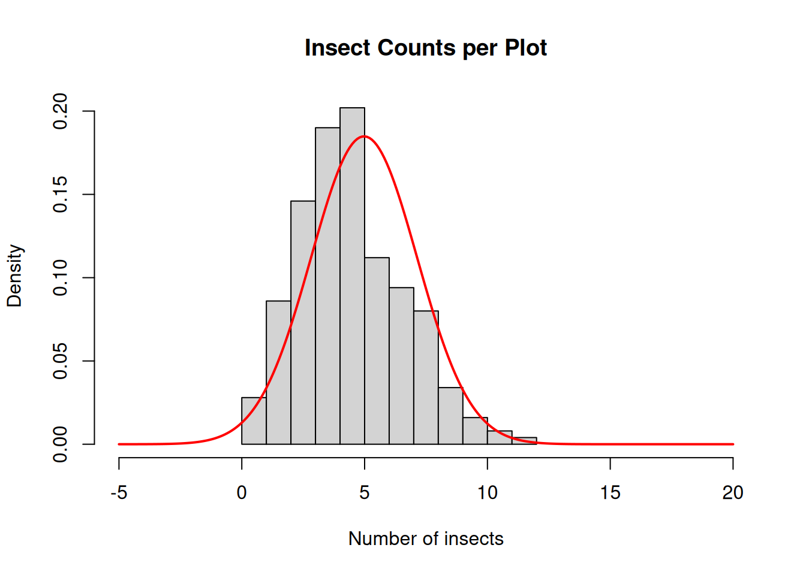
Proportion data tends to not follow a normal distribution either. Examples of proportion data that we collect in agriculture are:
Somethings are obviously wrong with the normal distribution model overlaid here:
The normal distribution is unbounded (\(-\infty\) to \(\infty\)) but the proportion data is bounded between 0 and 1…
In this specific case, the highest density is not concentrated around the mean, like in the normal distribution. This model is not a good representation of this dataset’s distribution.
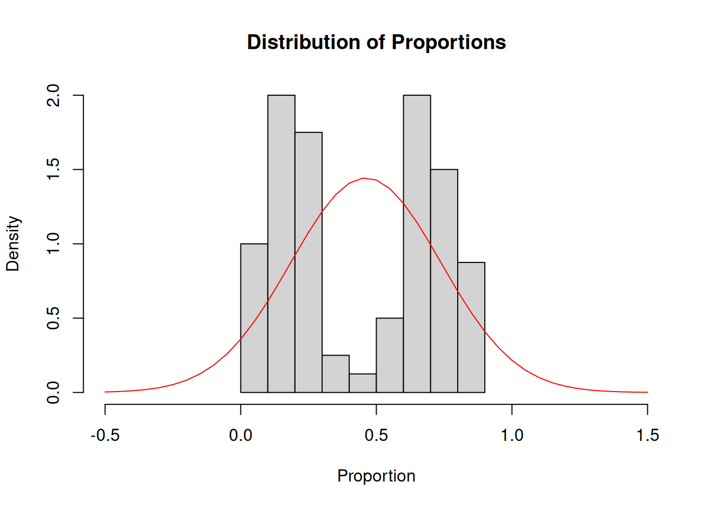
Let’s continue with our insect count example. In this example, we are analyzing data from a study that aimed to evaluate the effect of two insecticide treatments on the number of caterpillars found in a maize crop. The trial was conducted as a completely randomized experiment with 10 replications and included three treatments: untreated control, insecticide 1, and insecticide 2.
When we look at the raw data, we see that the distribution of insect counts does not seem to follow a normal distribution. Instead, the data is pretty skewed.
In addition, the normal distribution model curve using this sampled data’s mean and standard deviation seems to places a bit of probability of negative values being observed. Now, have you ever counted -1 insect? Except of course for when you crush one…
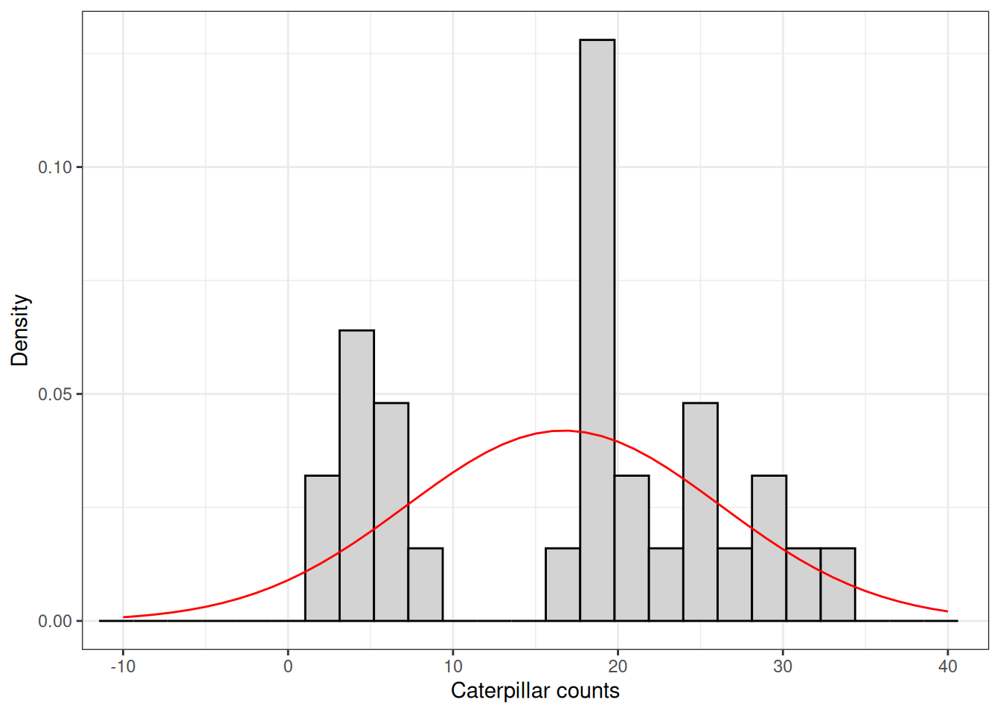
Would this affect our model?
As I mention often in this class, I like to begin the analysis by visualizing the data. This gives me a good idea of which effect sizes I should expect and helps me to diagnose some potential problems.
Let’s begin by visualizing this data, like in the previous modules empty circles represent the raw data, and filled triangles with error bars represent the mean and standard deviation.
A couple of things we can note:
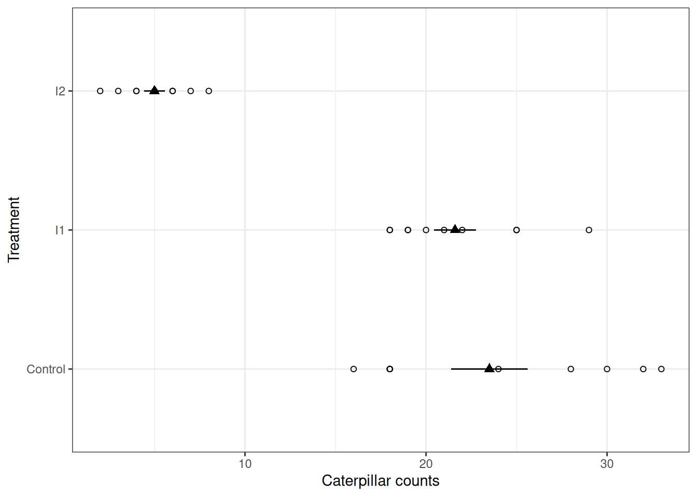
To find out how important this is, we can proceed to fitting a model ignoring the plot above.
Here, we fit a model in which insect counts (counts) is a function (~) of insecticide treatment (treatment).
The analysis of variance tells us that at least one of the treatments has a non-zero effect. As a researchers, we’re often thrilled when this happens! All of the work done to collect this data was finally rewarded, right?
Analysis of Variance Table
Response: counts
Df Sum Sq Mean Sq F value Pr(>F)
treatment 2 2071.4 1035.70 50.577 7.397e-10 ***
Residuals 27 552.9 20.48
---
Signif. codes: 0 '***' 0.001 '**' 0.01 '*' 0.05 '.' 0.1 ' ' 1Let’s take advantage of some of R’s pre-built diagnostic plots to assess whether we should trust this model.
First, let’s plot the residuals versus the fitted values. From the start, this plot shows us an issue with our model. Can you notice how the variance of the residuals increases as the mean predicted value also increases?
One of our assumptions when building this model was: \(\varepsilon_i \sim N(0,\sigma^2)\), which means that we assumed that the errors of the model were normally distributed and with uniform variance. This is not looking very uniform to me.
Second, let’s build what is known as Q-Q Plot. This helps us check whether our residuals look like they come from a normal distribution. It works by comparing the values we observe to the values we would expect if the data were perfectly normal. If everything lines up nicely along a straight line, that’s a good sign. If the points bend away from the line or show clear patterns, that’s evidence that the normality assumption may not hold.
Since the points deviate substantially from the diagonal line, this indicated that our residuals do not fit a normal distribution too well. To this point, our assumption of: \(\varepsilon_i \sim N(0,\sigma^2)\) seems to not hold.
So again:
Should we trust this model?
One approach is to transform the data.
For count data, a log transformation is commonly used because it can:
Let’s take a look at the distribution of skewed data when we apply the log transformation.
The log transformation, due to it’s nonlinearity, tends to help assymetry, diminishing the skewness of the data.
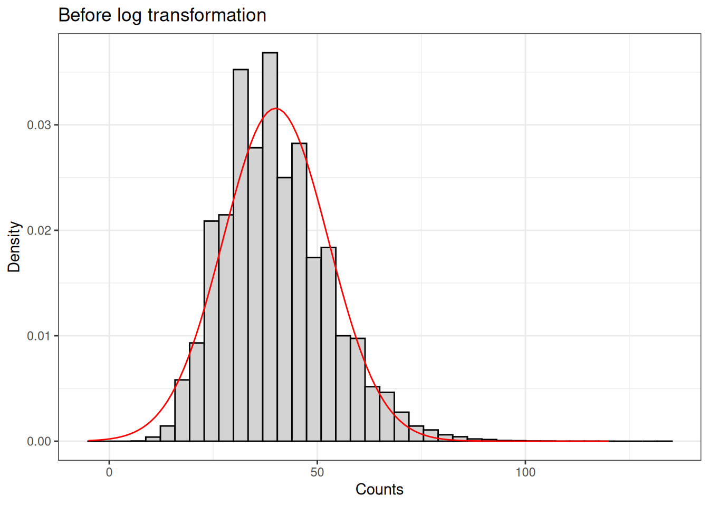
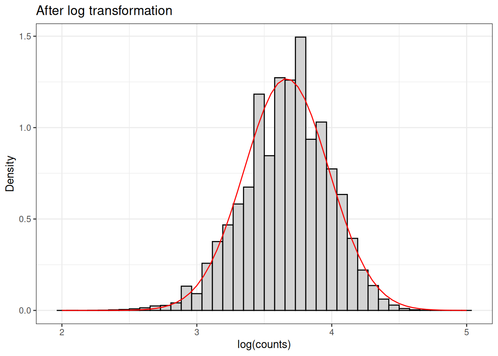
Note that now, we are modeling log(counts) as a function of treatment. In this case, the ANOVA results are similar, but this is not guaranteed. Transformations can change the conclusions.
Analysis of Variance Table
Response: log(counts)
Df Sum Sq Mean Sq F value Pr(>F)
treatment 2 16.0653 8.0327 86.536 1.809e-12 ***
Residuals 27 2.5063 0.0928
---
Signif. codes: 0 '***' 0.001 '**' 0.01 '*' 0.05 '.' 0.1 ' ' 1Once again, let’s look at the residuals of the model. This will tell us if we are closer to avoid violating model assumptions. It seems that the variance is a little more stable between the treatments and residuals are more balanced. Log transformation helps, but it does not completely resolve the problem.
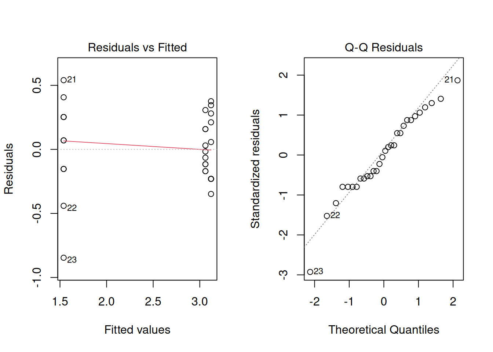
Great! So now let’s recover treatment means and compare them. It seems like the control treatment has an estimated marginal mean of 2.55 But looking back at the graph from when we first began to analyze the data, this treatment mean looked to be closer to 14…
treatment emmean SE df lower.CL upper.CL
Control 3.12 0.0963 27 2.92 3.32
I1 3.06 0.0963 27 2.86 3.26
I2 1.54 0.0963 27 1.34 1.74
Results are given on the log (not the response) scale.
Confidence level used: 0.95 Oh, that’s right, the means are at the log scale too! We now need to back-transform the mean. Strictly speaking, exponentiating the mean on the log scale gives something closer to a median on the original scale… but for now, we’ll focus on interpretation. Let’s extract the values in the log scale first.
[1] 3.120777 3.060597 1.539209The difference between I2 and the control is:
What does this mean in the data scale?
The key interpretation detail when looking at difference at the log scale, is that those differences represent ratios in the data scale.
The value of \(\approx\) 0.20 that we got above is the ratio of the medians of treatments I2 and Control. Which means that treatment I2 presented an \(\approx\) 80% reduction in the number of caterpillars compared to the control.
note: I will call is ds_means for data scale means.
To show that, we can take the ratio between the two medians.
Although very useful, transformations force our data to conform to the assumptions of the model. They can improve model performance, but they also:
In other words, we are modifying the data so that the model works.
But what if we could do the opposite?
What if we could use a model that is naturally suited for this type of data?
Instead of transforming the data to make it fit a normal model, we can take a different approach:
We can use a model that is designed for count data from the start.
This is the idea behind generalized linear models (GLMs).
For count data, a common choice is the Poisson distribution, which:
Let’s fit a GLM using the same dataset:
Let’s then look at the residuals and the Q-Q plot
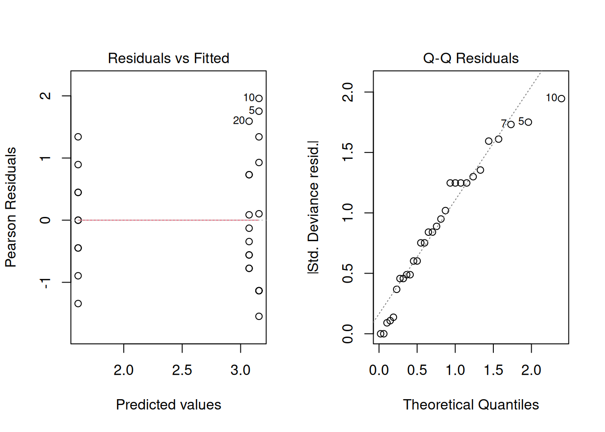
The GLM with a Poisson distribution uses a log link function
This means that the logarithm of the expected value (mean) is modeled as a linear function of the predictors.
That means:
So in a sense, this model may look similar to what we did with a log transformation, but it is not the same thing.
treatment emmean SE df asymp.LCL asymp.UCL
Control 3.16 0.0652 Inf 3.03 3.28
I1 3.07 0.0680 Inf 2.94 3.21
I2 1.61 0.1410 Inf 1.33 1.89
Results are given on the log (not the response) scale.
Confidence level used: 0.95 By default, these are on the link scale (log scale in this case).
Let’s back-transform them:
Let’s review the results from both models and think about any differences.
Log-transformed data
[1] 22.663994 21.340285 4.660904GLM
[1] 23.5 21.6 5.0Note that treatment values are similar, but not identical. This shows us that although there are similarities between these two approaches, they are not identical.
One important difference is that in the first case, we assumed that once log-transformed, the errors would fit a normal distribution with mean zero and constant variance- \(\varepsilon_i \sim N(0,\sigma^2)\). In the case of the GLM, the variance is modeled as part of the Poisson distribution (this is a particularity of this distribution both the mean and the variance have the same value).
To make things concrete, let’s compare the two approaches with simple formulas.
\[ \log(y_i) = \mu + \tau_j + \varepsilon_i, \quad \varepsilon_i \sim N(0, \sigma^2) \]
\[ y_i \sim \text{Poisson}(\lambda_i), \quad \log(\lambda_i) = \mu + \tau_j \]
I do not expect you to know all the particularities of all distributions in this class. I mention this so you understand why there are differences between the models.
With the log transformation:
With the GLM:
Instead of forcing the data to fit the model, we are now ackowledging the distribution of the data and modeling it appropriately
Before we wrap up, I want to make an important point.
Throughout this lecture, we looked at several examples of data that were clearly skewed or non-normal, and we saw how this led to problems with our models.
It might be tempting to conclude that:
“Whenever the data look skewed, we should avoid ANOVA or transform the data.”
But that is not quite correct.
The assumptions we are making are not about the raw data, they are about the residuals.
This means that it is entirely possible to have data that look skewed at first glance, but once we account for treatment effects, the residuals behave well and the model assumptions are reasonably satisfied.
In those cases, a linear model may still be appropriate.
The key is not how the raw data look, but how the residuals behave.
That said, strongly skewed data often lead to problematic residuals, so these two are often related.
So rather than making decisions based only on histograms, we should always:
We will look at data from a trial that evaluated a couple of treatments on corn yield. The treatments themselves are irrelevant here so I will keep this a minimal example.
What I want to show here is that the raw data is clearly skewed. One could look at this dataset and immediately start thinking of transformations.
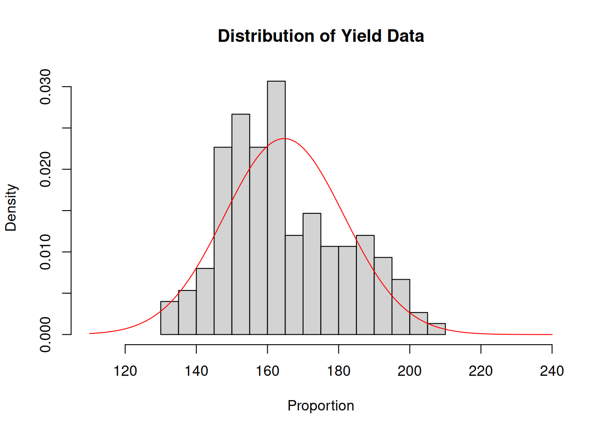
Let’s slow down a bit and fit the model:
and look at the residuals:
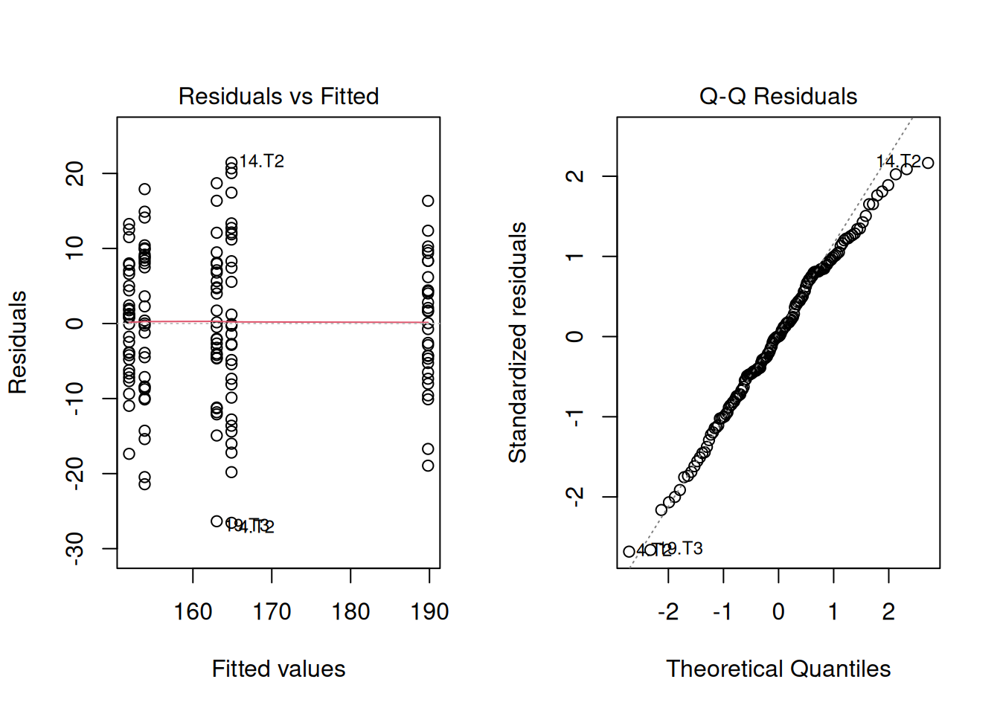
There’s nothing concerning in the residuals, apparently. But the data seemed to be very skewed. How’s that possible?
Let’s take a look at the treatment means:
treatment emmean SE df lower.CL upper.CL
T0 152 1.84 145 148 156
T1 154 1.84 145 150 158
T2 165 1.84 145 161 169
T3 163 1.84 145 159 167
T4 190 1.84 145 186 193
Confidence level used: 0.95 Since we have most means grouped around 160 bu/ac give or take, and one mean a little farther, at 190 bu/ac, this the raw data gave us an impression that the residuals could be skewed as well. However, that was an artifact of the treatment effects.
I wanted to include this here because this happens sometimes in agronomic trials. It is important to recognize that our assumptions are about the residuals, and not the raw data.
In this module, we explored what happens when our data do not behave as nicely as we would like.
We saw that:
We then explored two different approaches:
The key takeaway is:
When assumptions are violated, we have options. Choosing the right approach depends on both the data and the question we are trying to answer.